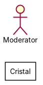
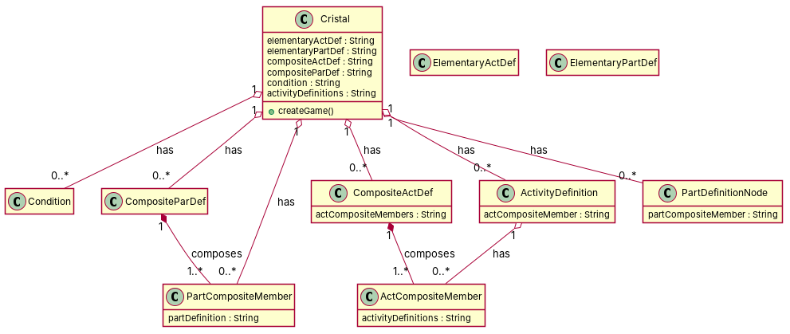

R1: A Cristal package has a class named Condition. R2: A Cristal package has one or more CompositeParDef. R3: The ElementaryPartDef class of a Cristal. R4: The ElementaryActDef of a Cristal R5: The CompositeActDef of a Cristal. R6: The ActCompositeMember of a Cristal. R7: The Cristal model has Activity Definitions. R8: The cristal model has Part Definitions. R9: The Cristal model has Part Composite Members R10: The Condition class of a Cristal may have one or more PartCompositeMember. R11: The CompositeParDef of a Cristal may be composed by one or more PartCompositeMember. R12: The CompositeActDef of a Cristal may may be composed by one or more ActCompositeMembers R13: The ActCompositeMember of a Cristal may have one or more ActivityDefinition. R14: The ActivityDefinition of a Cristal has exactly one ActCompositeMember. R15: The PartDefinition node has any number of PartCompositeMember nodes. Each such node has one PartDefinition node. R16: The PartCompositeMember is a member of a unique PartDefinition of the Cristal model.
Red, struck-through: removed by ambiguity removal; green: added.
| actors (1 → 1) |
|---|
| part composite member |
| classes (10 → 10) |
|---|
| Actcompositemember |
| ActivityDefinition |
| CompositeActDef |
| CompositeParDef |
| Condition |
| Cristal |
| Member |
| PartCompositeMember |
| PartDefinitionNode |
| Partcompositemember |
| attributes (4 → 4) |
|---|
| Cristal.condition class |
| Cristal.elementary act def |
| Cristal.elementary part def class |
| PartDefinitionNode.part composite member node |
| relations (7 → 7) |
|---|
| generalization: PartCompositeMember -> Member |
| has: Actcompositemember -> ActivityDefinition |
| has: ActivityDefinition -> Actcompositemember |
| has: Cristal -> Actcompositemember |
| has: Cristal -> ActivityDefinition |
| has: Cristal -> CompositeActDef |
| has: Cristal -> CompositeParDef |
| id | req | type | cue | status | readings / explanation |
|---|---|---|---|---|---|
| A1 | R2 | quantifier | one or more | resolved | one CompositeParDef; multiple CompositeParDefs The phrase 'one or more' could imply either a single CompositeParDef or multiple CompositeParDefs. |
| A2 | R10 | quantifier | one or more | resolved | one PartCompositeMember; multiple PartCompositeMembers The phrase 'one or more' could imply either a single PartCompositeMember or multiple PartCompositeMembers. |
| A3 | R11 | quantifier | one or more | resolved | one PartCompositeMember; multiple PartCompositeMembers The phrase 'one or more' could imply either a single PartCompositeMember or multiple PartCompositeMembers. |
| A4 | R12 | quantifier | one or more | resolved | one ActCompositeMember; multiple ActCompositeMembers The phrase 'one or more' could imply either a single ActCompositeMember or multiple ActCompositeMembers. |
| A5 | R13 | quantifier | one or more | resolved | one ActivityDefinition; multiple ActivityDefinitions The phrase 'one or more' could imply either a single ActivityDefinition or multiple ActivityDefinitions. |
| A6 | R15 | quantifier | any | resolved | any number of PartCompositeMember nodes; specific number of PartCompositeMember nodes The phrase 'any' could imply an unspecified number of PartCompositeMember nodes or a specific number. |


"""Code skeleton generated from the shared model of D2/Cristal.
Every class and method records the requirement(s) it traces to."""
from __future__ import annotations
import dataclasses as _dc
import enum as _enum
import typing as _t
@_dc.dataclass
class Cristal:
"""Source: -"""
elementaryActDef: _t.Optional[str] = None
elementaryPartDef: _t.Optional[str] = None
compositeActDef: _t.Optional[str] = None
compositeParDef: _t.Optional[str] = None
condition: _t.Optional[str] = None
activityDefinitions: _t.Optional[str] = None
partDefinitionNodes: _t.List["PartDefinitionNode"] = _dc.field(default_factory=list)
partCompositeMembers: _t.List["PartCompositeMember"] = _dc.field(default_factory=list)
compositeActDefs: _t.List["CompositeActDef"] = _dc.field(default_factory=list)
compositeParDefs: _t.List["CompositeParDef"] = _dc.field(default_factory=list)
conditions: _t.List["Condition"] = _dc.field(default_factory=list)
def createGame(self) -> None:
"""Operation."""
raise NotImplementedError
@_dc.dataclass
class Condition:
"""Source: R1"""
pass
@_dc.dataclass
class CompositeParDef:
"""Source: R2"""
partCompositeMembers: _t.List["PartCompositeMember"] = _dc.field(default_factory=list)
@_dc.dataclass
class ElementaryActDef:
"""Source: R4"""
pass
@_dc.dataclass
class ElementaryPartDef:
"""Source: R3"""
pass
@_dc.dataclass
class CompositeActDef:
"""Source: R5"""
actCompositeMembers: _t.Optional[str] = None
@_dc.dataclass
class ActCompositeMember:
"""Source: R6"""
activityDefinitions: _t.Optional[str] = None
@_dc.dataclass
class ActivityDefinition:
"""Source: R14"""
actCompositeMember: _t.Optional[str] = None
actCompositeMembers: _t.List["ActCompositeMember"] = _dc.field(default_factory=list)
@_dc.dataclass
class PartCompositeMember:
"""Source: R9"""
partDefinition: _t.Optional[str] = None
@_dc.dataclass
class PartDefinitionNode:
"""Source: R16"""
partCompositeMember: _t.Optional[str] = None
| python_compiles | True |
|---|---|
| java_compiles | True |
| attribute_mismatches | 0 |
| method_mismatches | 0 |
| use_cases | 0 |
| use_cases_without_actor | 0 |
| use_cases_without_method | 0 |
| actors_without_use_case | 1 |
| relations_to_unknown_class | 0 |
| inconsistencies | 1 |
| inconsistency_rate | 0.0909 |
| requirement_coverage | 0.8125 |
| validator fixes | |
| assumptions for open ambiguities | [{"tag": "A3", "assumption": "Requirement R15 is assumed to be a typo and should be R10, as it refers to PartCompositeMember."}] |
| element | P | R | F1 | TP/FP/FN |
|---|---|---|---|---|
| classes | 0.8 | 0.889 | 0.842 | 8/2/1 |
| attributes | 0.0 | 0.0 | 0.0 | 0/11/0 |
| relations | 0.333 | 0.3 | 0.316 | 3/6/7 |
| relations_strict | 0.333 | 0.3 | 0.316 | 3/6/7 |